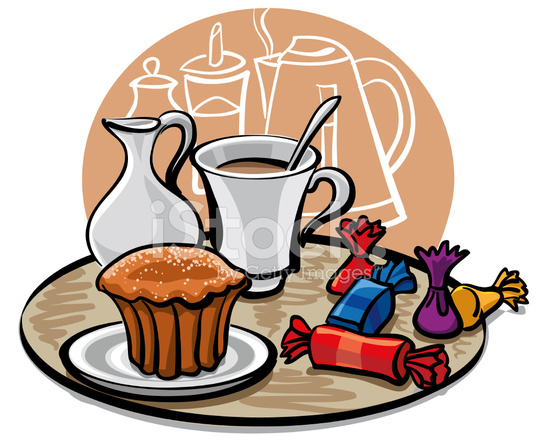

Карты-изображения позволяют привязывать ссылки к разным областям одного изображения. Для указания того, что изображение является картой, используется атрибут usemap тега <img>. Он является ссылкой на описание конфигурации карты, которая задается тегом <map>. В качестве значения usemap указывается ссылка на описание конфигурации карты в формате usemap="#название_карты". Значение атрибута name тега <map> должно соответствовать имени в usemap. Для задания активой области картинки <img>, являющейся ссылкой на HTML-документ, используется тег <area>.
<area shape="circle" coords="230,340, 100" href="circle.html">
<area shape="rect" coords="24,18, 210,56" href="rect.html">
<area shape="poly" alt="Закладка 4"
coords="302,27, 303,32, 394,32, 393,27, 386,9, 382,3, 375,1, 303,1, 298,2, 293,6, 295,9, 302,27"
href="poly.html">
Для удобства создания координат форм областей можно использовать сторонние ресурсы такиие как этот.
При наведении и клике курсором на кекс, кофе или конфеты эта область изображения сработает как ссылка.

Вернуться к списку домашних заданий